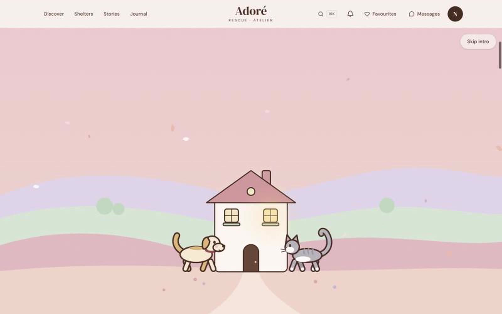
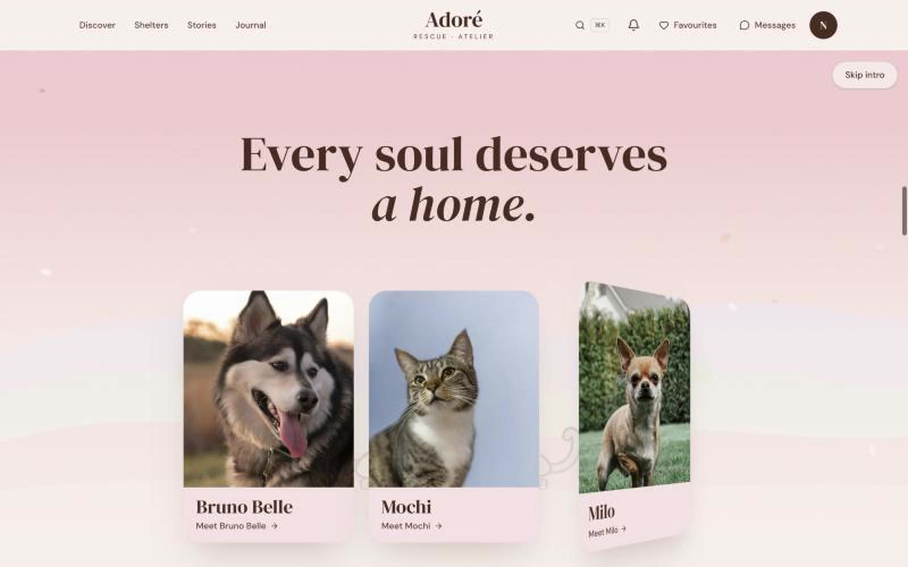
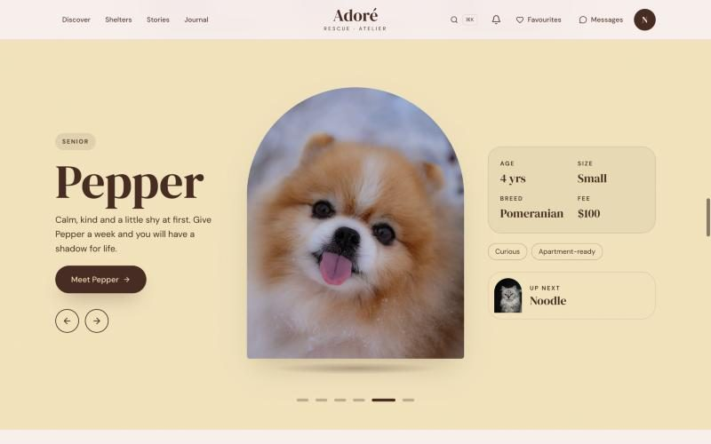

Case study — Pet adoption web app
Adoré
Adoption sites feel like shelter databases. I designed one that feels like meeting someone — then built it.
Recorded from the live site. On the real page, the scene moves with your scroll.
The problem
Most adoption sites are listings: filters, grids and a hundred faces at once. People scroll past before they connect with a single animal.
What made it hard
- It had to feel warm and premium, never like a sad charity ad
- The story had to work on a phone, with one thumb
- People who already know what they want need a way to skip it
- Figma can’t scrub an animation with the scroll wheel
Three decisions
Tell a story before showing a catalogue
I tried six visual directions before choosing “Blush”: soft pinks with dark cocoa text. The opening is a seven-stage, scroll-driven scene — an empty house, a dog and a cat walk in, the light turns on — ending on “Every soul deserves a home.” A Skip intro button is always on screen.

One face at a time
Cards flip from the ADORÉ crest to a real pet as you scroll, so the first animal you meet gets your full attention instead of competing in a grid.

Profiles that read like an introduction
Each pet gets a name, one personality line and only the facts that matter — age, size, breed, fee — plus who’s up next. A 16-step match quiz suggests which pet fits your home.

80
Figma frames — every one clickable, desktop and mobile
7
intro stages linked with Smart Animate
16
match-quiz steps per platform
6
visual directions explored before “Blush”
What I learned
Figma can’t tie motion to the scroll wheel, so I prototyped the intro as timed stages with Smart Animate and proved the real scroll motion in code with GSAP. Knowing where each tool stops — and picking the right one for each question — is part of the design job.
Built with
- Figma
- Next.js 15
- TypeScript
- Tailwind CSS v4
- GSAP
- Prisma
- PostgreSQL
- Cloudinary
- Upstash Redis
- Vercel
Tim · timwinchester16@gmail.com · GitHub · LinkedIn